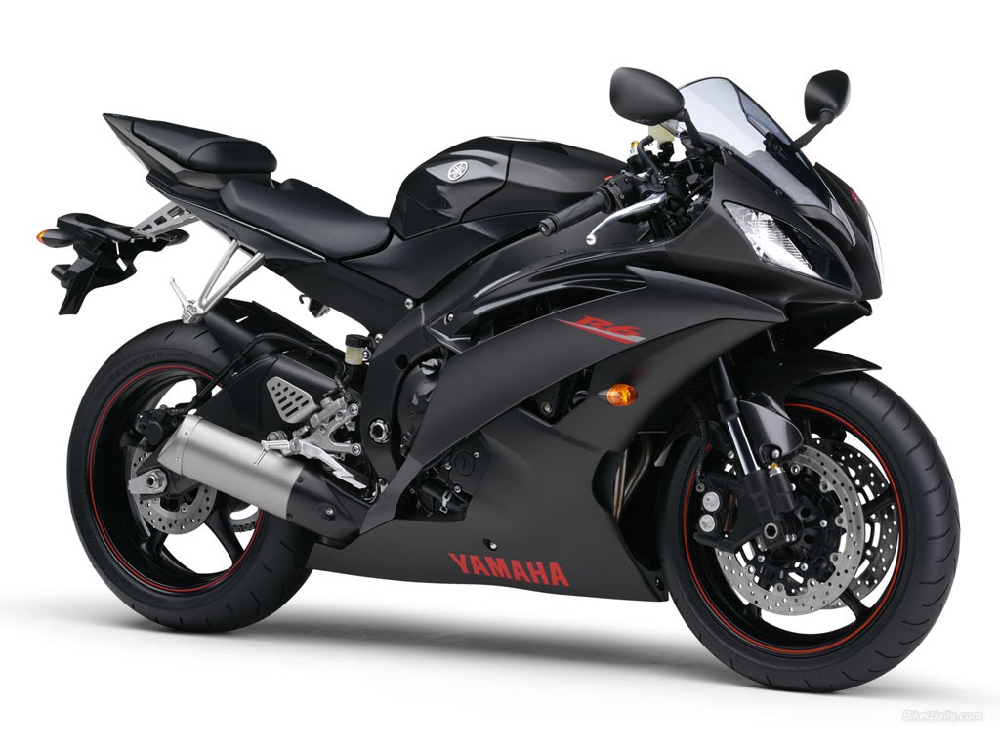
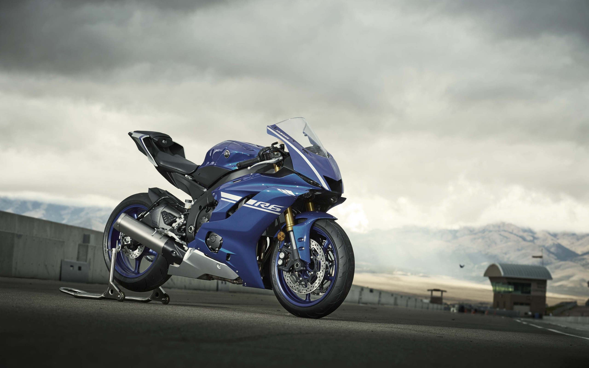

| .................................................................................................................YAMAHA YZF R1(1989).................................................................................................................. |
La primera R1 se presentó en el Salón de Tokio de 1997 y llegó al mercado en 1998. Tenía un motor de cuatro cilindros en línea de 998 cc, refrigerado por líquido, DOHC y cinco válvulas por cilindro, con cerca de 150 CV y un peso muy bajo para la época, alrededor de 177 kg. Su impacto fue tan grande que la prensa japonesa lo llamó el “R1 Shock”: cambió de inmediato las expectativas de las supersport y aceleró la transición desde las 750 cc hacia las 1,000 cc en el segmento deportivo. |

.................................................................................................................PRIMERA GENERACION..............................................................................................................
